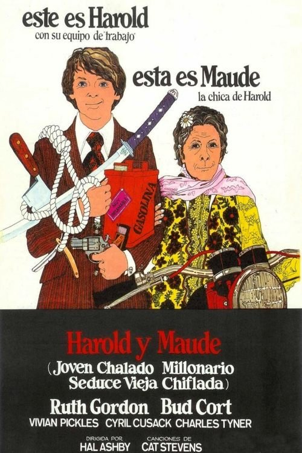

Harold y Maude (1971)
Sinopsis Rápida
¿Qué pasaría si un joven obsesionado con la muerte encuentra a una mujer de 79 años que celebra la vida con pasión desenfrenada? Prepárate para una comedia negra inolvidable que te hará reír y reflexionar.
Sinopsis Detallada
Harold, un joven con una morbosa fascinación por la muerte, encuentra en Maude, una vital y excéntrica septuagenaria, una inesperada conexión. Su peculiar relación desafía las convenciones sociales y explora temas de vida, muerte y el significado de la existencia con un humor negro inteligente y agudo. A través de situaciones surrealistas y diálogos ingeniosos, la película desmonta las nociones tradicionales de la edad y la mortalidad, ofreciendo una perspectiva única y conmovedora sobre el paso del tiempo. Una obra maestra del cine independiente que perdura en la memoria por su originalidad y su profundo mensaje.
¿Por qué tenés que verla?
- Una comedia que te hará reír a carcajadas mientras te confronta con la finitud de la vida.
- La química inigualable entre Ruth Gordon y Bud Cort, junto a la dirección magistral de Hal Ashby.
- Su influencia perdurable en el cine independiente y su capacidad para generar debates sobre la vida y la muerte.
- Una banda sonora icónica y memorable.
Idea Extra
Análisis de la banda sonora de Cat Stevens y su impacto en la atmósfera de la película.
{{CONTENIDO_RELACIONADO}}